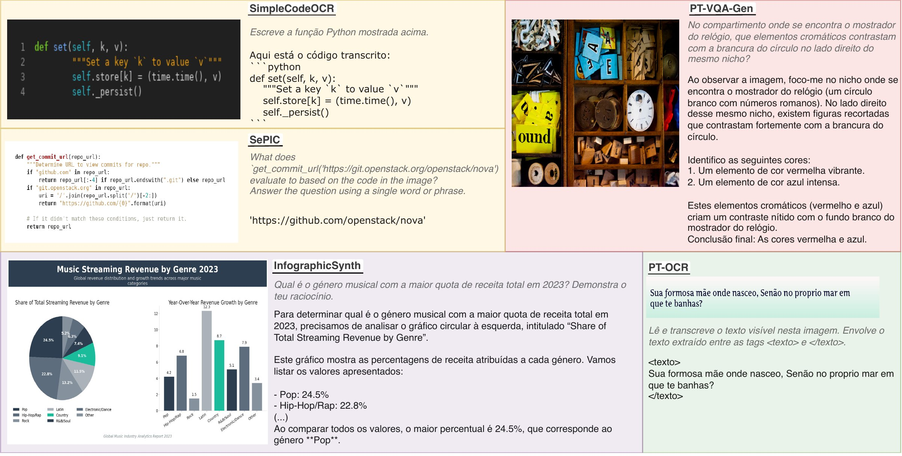

AMALIA-VLA Native European Portuguese Open-Source Vision and Language Model
1 NOVA School of Science and Technology2 NOVA LINCS
Correspondence: dmgc.silva@fct.unl.pt
Abstract
Large Vision and Language Models (LVLMs) have advanced rapidly, yet European Portuguese (pt-PT) remains systematically underserved by existing open-source multimodal models, which either conflate it with Brazilian Portuguese or severely under-represent it in their training data mixes. We introduce AMALIA-VL, the first open-source instruction-tuned LVLM built natively for pt-PT, pairing a high-resolution vision encoder with dynamic image tiling and a fully open pt-PT-optimized language model via a learned connector. We contribute with a purposefully designed three-stage training process — vision-language alignment, general visual instruction tuning, and preference optimization — together with a pt-PT-centric multimodal data mix combining curated and translated public datasets with novel datasets that address the near-total absence of European Portuguese multimodal resources. Our evaluation shows that AMALIA-VL establishes a strong baseline for open-source pt-PT LVLMs. We release model weights, training data, and construction pipelines along with machine-translated pt-PT evaluation benchmarks to help democratize pt-PT LVLM development.
Native pt-PT LVLM
The first fully open native pt-PT LVLM, competitive with leading open-source LVLMs.
Three-stage training
Adds vision capabilities while preserving the LLM's pt-PT proficiency and cultural knowledge.
pt-PT data mix
4.7M samples, including 12 novel synthetic pt-PT datasets.
pt-PT benchmarks
18 vision benchmarks machine-translated to pt-PT.
Model and Training
Following LLaVA-NeXT, AMALIA-VL pairs a SigLIP2 vision encoder with adaptive image tiling and the open pt-PT AMALIA LLM, via a two-layer MLP connector. Training progressively instils vision capabilities while minimizing text-only regression in pt-PT.
Vision-Language Alignment
Connector warm-up on image captions, with encoder and LLM frozen.
Visual Instruction Tuning
Full model training on a highly diverse, pt-PT-centric instruction mix.
Preference Optimization
DPO on synthetic preference pairs from the Stage 2 mix, plus safety data.
pt-PT Multimodal Data
European Portuguese multimodal resources are nearly absent. We combine open-license datasets, translated to pt-PT with TranslateGemma and Gemma3 to avoid monolingual islands, with 12 novel synthetic datasets generated with open-source models over public-domain images.
- General VQAPT-VQA-Gen: native pt-PT questions with Chain-of-Thought answers, filtered for pt-BR, hallucinations and easy samples.
- OCR & documentsPT-OCR, PT-Render-Text, InvoiceQA: pt-PT transcription in diverse output formats, field extraction and rejection of incorrect candidates.
- CaptioningPT-Caps, PT-Caps-Fusion: bilingual captions at three levels of detail, and fused captions from multiple LVLMs.
- Charts & codeInfographicSynth and four code datasets (SimpleCodeOCR, SePIC, PTOutputsToCode, PTSimpleCodeOutputs): chart QA, code transcription and execution reasoning.
- CultureCaravelaSFT: Portuguese heritage and gastronomy, from Wikipedia and the DGADR registry.
Stage 2 data mixture
share of 4.7M samples
Results
We evaluate 17 LVLMs across the openness spectrum in pt-PT, on 18 benchmarks covering general VQA, OCR and document understanding, charts and diagrams, spatial understanding, captioning and mathematics. The benchmarks were machine-translated with Gemini-3.1-Pro and validated through manual assessment. All models follow a unified lmms-eval protocol, with instruct variants, thinking disabled and temperature 0.
Average pt-PT score across 18 benchmarks
hover a bar for detailsStrengths
- Strongest fully open model. AMALIA-VL-DPO averages 55.1, ahead of the next best fully open model, Perception-LM-8B (47.6), and is top scoring in 13 out of 18 benchmarks among open-source models.
- Captioning. Its strongest task type, with the best overall score on COCO (50.8, next best 36.5). Captioning requires syntactically correct long-form pt-PT, where the advantage of other models dwindles.
- Spatial grounding. AMALIA-VL-DPO reaches 79.2 on RefCOCO and adapts to different bounding box formats, while most models fail to follow the format requested in pt-PT. DPO adds over 3 points on EmbSpatial.
- OCR. Together with captioning and spatial grounding, AMALIA-VL is best in class in 5 out of 8 benchmarks. DPO improves all four OCR benchmarks through better response style and format compliance.
Open challenges
- General VQA. AMALIA-VL is the best fully open model in 6 out of 7 benchmarks, but this is also where the gap to open-weights models is largest, bounded by the availability of licensable broad world-knowledge training data.
- Complex reasoning. MathVision and MMStar remain difficult, which we attribute to the lack of long-form pt-PT reasoning data in the training mix.
- European is not European Portuguese. The European-centric TowerVision (42.5) and EuroVLM (41.3) show no advantage over similarly open peers. General European language support does not translate into robust pt-PT performance.
Full results (Table 3)
| General VQA | OCR & Document | Chart & Diagram | Spatial | Caption | Math | ||||||||||||||
|---|---|---|---|---|---|---|---|---|---|---|---|---|---|---|---|---|---|---|---|
| Model | MME† | MMMU† | MMStar† | MMPro | SEED† | POPE† | RWQA | OCR | TxtVQA† | DocVQA† | InfoVQA† | AI2D | ChartQA | EmbSp | RefRec | COCO† | RefCap | MVision† | Average |
| Ministral-3-8B◇ | 1756 | 45.4 | 45.3 | 26.8 | 70.3 | 77.1 | 56.2 | 61.7 | 52.8 | 70.0 | 52.7 | 71.9 | 49.5 | 49.2 | 26.9 | 22.4 | 4.0 | 29.5 | 48.6 |
| Gemma-3-12B◇ | 2120 | 47.8 | 51.4 | 32.1 | 70.5 | 85.1 | 49.4 | 62.7 | 61.2 | 67.8 | 42.8 | 75.9 | 54.2 | 55.7 | 6.1 | 26.7 | 5.8 | 32.4 | 50.2 |
| GLM-4.6V-Flash◇ | 2294 | 48.6 | 60.7 | 36.9 | 77.1 | 86.8 | 66.8 | 76.2 | 69.9 | 66.0 | 5.7 | 80.6 | 42.8 | 70.6 | 86.9 | 25.8 | 9.8 | 7.8 | 55.6 |
| MiniCPM-V4◇ | 2274 | 44.9 | 60.4 | 27.9 | 76.8 | 85.7 | 66.6 | 72.4 | 65.1 | 70.0 | 59.8 | 79.0 | 74.5 | 66.2 | 45.1 | 32.0 | 6.0 | 19.1 | 57.4 |
| Qwen3-VL-8B◇ | 2355 | 51.3 | 60.8 | 37.2 | 78.1 | 85.5 | 68.2 | 75.7 | 67.7 | 70.9 | 66.0 | 80.7 | 75.5 | 73.9 | 0.2 | 30.4 | 12.2 | 24.4 | 57.9 |
| InternVL3.5-8B◇ | 2217 | 53.7 | 62.4 | 38.0 | 76.2 | 86.3 | 62.9 | 72.6 | 62.3 | 66.4 | 58.4 | 79.0 | 74.8 | 69.9 | 39.2 | 29.9 | 5.6 | 38.1 | 58.6 |
| Nemotron-Nano-12B◇ | 2004 | 50.7 | 59.9 | 36.3 | 77.9 | 85.2 | 69.9 | 80.2 | 69.0 | 69.7 | 64.9 | 83.9 | 78.6 | 64.7 | 62.3 | 18.8 | 2.9 | 33.1 | 60.0 |
| Qwen3.5-9B◇ | 2226 | 52.2 | 57.6 | 36.7 | 78.5 | 84.7 | 74.6 | 71.7 | 70.8 | 76.3 | 71.6 | 83.5 | 80.3 | 69.3 | 83.6 | 33.7 | 13.5 | 54.4 | 65.2 |
| EuroVLM-9B◇♣ | 1581 | 34.0 | 40.3 | 19.8 | 66.8 | 84.2 | 55.2 | 46.4 | 54.1 | 56.4 | 34.0 | 61.5 | 47.6 | 38.8 | 5.1 | 23.9 | 5.3 | 12.9 | 41.3 |
| TowerVision-9B◇♡ | 1414 | 39.1 | 41.9 | 21.7 | 70.8 | 85.1 | 49.9 | 47.5 | 58.3 | 56.1 | 38.3 | 65.0 | 39.2 | 49.1 | 8.3 | 24.4 | 4.9 | 14.6 | 42.5 |
| Molmo2-8B◇♡ | 1936 | 52.7 | 61.2 | 36.4 | 73.0 | 87.2 | 66.8 | 59.0 | 61.2 | 62.8 | 50.2 | 80.9 | 43.5 | 62.1 | 3.6 | 19.5 | 3.8 | 22.4 | 50.8 |
| LLaVA-OV1.5-8B◇♡ | 2244 | 52.9 | 64.7 | 36.9 | 75.8 | 86.4 | 62.9 | 76.1 | 63.3 | 72.0 | 62.6 | 81.6 | 74.2 | 60.2 | 78.1 | 36.5 | 8.2 | 23.1 | 60.9 |
| Salamandra-VL-7B◇♡♣ | 784 | 27.7 | 32.0 | 11.8 | 33.3 | 64.9 | 19.7 | 21.0 | 1.6 | 6.0 | 8.7 | 30.1 | 14.0 | 26.3 | 0.0 | 19.7 | 8.2 | 3.1 | 19.8 |
| Molmo2-O-7B◇♡♣ | 1618 | 37.8 | 52.6 | 26.5 | 70.0 | 81.5 | 58.3 | 57.4 | 55.1 | 52.7 | 41.6 | 66.4 | 40.4 | 54.7 | 3.4 | 18.4 | 4.7 | 11.8 | 43.9 |
| Perception-LM-8B◇♡♣ | 1368 | 37.7 | 52.8 | 22.9 | 73.0 | 82.8 | 53.4 | 76.5 | 60.8 | 65.4 | 60.3 | 67.6 | 69.2 | 62.2 | 0.0 | 15.2 | 3.1 | 4.7 | 47.6 |
| AMALIA-VL◇♡♣ | 1815 | 40.0 | 44.7 | 27.9 | 72.0 | 89.3 | 60.9 | 59.0 | 66.2 | 68.7 | 45.0 | 68.4 | 67.8 | 53.7 | 77.4 | 50.8 | 11.2 | 12.2 | 54.5 |
| AMALIA-VL-DPO◇♡♣ | 1824 | 40.3 | 44.0 | 27.1 | 73.8 | 89.1 | 59.9 | 62.4 | 68.0 | 69.5 | 45.6 | 69.3 | 66.5 | 57.0 | 79.2 | 49.7 | 10.7 | 14.0 | 55.1 |
Open Release
- AMALIA-VL-DPOfinal model
- AMALIA-VL-SFTStage 2 model
- AMALIA-VL-SFT-DatasetStage 2 data
- AMALIA-VL-DPO-DatasetStage 3 data
- AMALIA VL Evalpt-PT benchmarks
- amalia-vl-sftSFT code
- amalia-vl-dpoDPO code
- amalia-vl-evalevaluation code
- CARAVELAcultural data
- PorTEXTOpt-PT OCR benchmark
BibTeX
@article{gloriasilva2026amaliavl,
title = {{AMALIA-VL}: A Native European Portuguese Open-Source Vision and Language Model},
author = {Gl{\'o}ria-Silva, Diogo and Cardeira, Jo{\~a}o and Letras da Luz, Manuel and
Simpl{\'i}cio, Afonso and Vinagre, Gon{\c{c}}alo and Tavares, Diogo and
Ferreira, Rafael and Calvo, In{\^e}s and Vieira, In{\^e}s and
Semedo, David and Magalh{\~a}es, Jo{\~a}o},
journal = {arXiv preprint arXiv:2606.19100},
year = {2026}
}